Exporting from Qt 3D Studio
Use the following guidelines to achieve the best results when converting projects from Qt 3D Studio to Qt Design Studio.
Best Practices
- If something in UI is clearly 2D, do not import it from Qt 3D Studio presentation. Implement it directly in Qt Design Studio.
- QML streams cannot be imported as QML elements directly into Qt Design Studio. They need to be copied manually since there is no import functionality for QML files in Qt Design Studio.
- If you do import the whole Qt 3D Studio project (
.uiafile), use only the parts you actually need from it. Use Move Component Into Separate File for the parts you need, and eventually delete all the rest from the project structure. - There are extra levels of
Nodeelements in most imported QML files, and they should be removed for improved performance. As a rule of thumb, each Node that has only one child is considered an extra level that should be deleted. - Qt 3D Studio slides become Qt Design Studio states, and there may be problems with state changes. Always go through each of the state changes to make sure they work correctly.
Importing Assets
Custom Materials
Custom materials (something.shader files in Qt 3D Studio) are not imported correctly, and have to be fixed manually.
- They are imported as
CustomMaterial { id: something; source: "something" }that neither works nor does anything. - Remove the source: "something" altogether.
- Vertex shader part from the something.shader needs to be copied to
Shader { stage: Shader.Vertex; shader: "vertex shader code here" }inside theCustomMaterial. Fragment shader part needs to be copied toShader { stage: Shader.Fragment; shader: "fragment shader code here" }. - Properties in Metadata of the something.shader need to be introduced manually as QML properties of the same name and correct type inside the
CustomMaterialelement. - Add
import QtQuick3D.Materials 1.15import statement to files that haveCustomMaterialelements. - If custom material uses textures, they are not imported automatically and must be manually added to the project structure.
- Many custom materials are not rendered in the 3D or 2D view due to an open bug in Qt Design Studio 1.5. The project needs to be run for them to appear.
Standard Materials
Some properties of standard materials may not be imported correctly.
- The sensible value ranges of some properties may have changed between Qt 3D Studio and Qt Design Studio and need to be redefined manually.
- Extra properties may be added and can be removed manually.
Models
Models have some extra properties (tessellations), which can be removed.
Example: Converting MyOwnCluster Project from Qt 3D Studio to Qt Design Studio
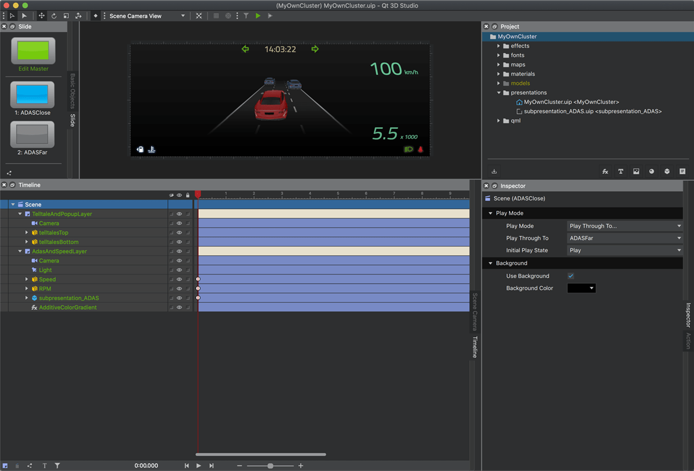
My Own Cluster project in Qt 3D Studio
The following steps describe how to convert the My Own Cluster project from Qt 3D Studio to Qt Design Studio.
Creating a New Project in Qt Design Studio
- To create a new project in Qt Design Studio, select File > New File or Project, or select New Project in the Welcome mode.
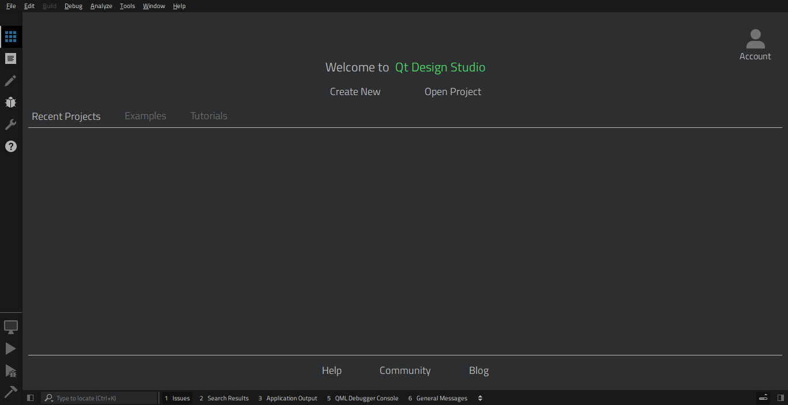
- Creating a new project in Qt Design Studio is aided by a wizard that contains templates for creating different types of projects. Choose the Qt Quick 3D Application template to get started with your new 3D project.
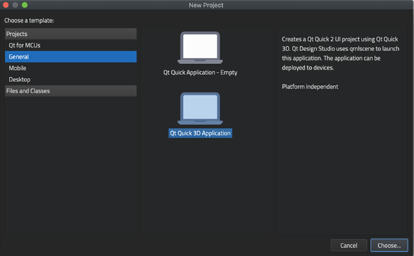
- In the Name field, enter a name for the project. In the Create in field, enter the path for the project files, and then select Next.
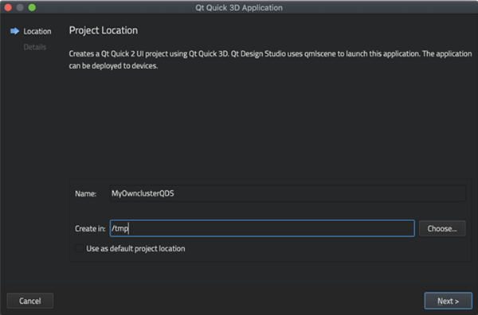
- In the Screen resolution field, select the screen resolution for previewing the UI on the desktop or on a device. You must select one of the predefined screen resolutions, which will later be altered to match the width and height of the original project. In the Qt Quick Controls Style field, select one of the predefined UI styles to use, and then select Finish.
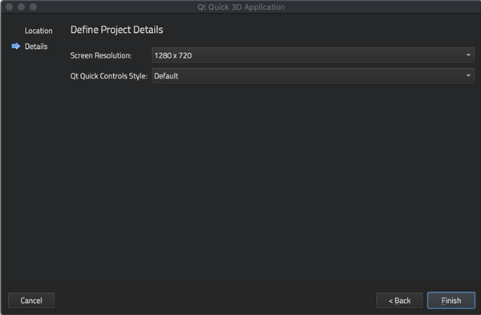
- Your new project has now been created. For more information on creating projects in Qt Design Studio, see Creating Projects. For more information on how to get started with Qt Design Studio, see Getting Started.
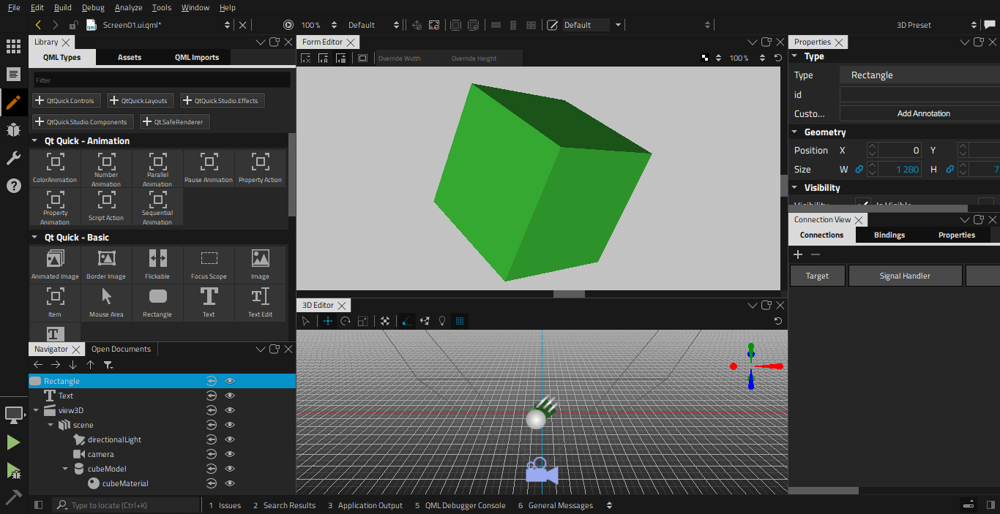
Getting Started with MyOwnCluster
- Return to your project in Qt 3D Studio to check the size of the presentation. Select Edit > Presentation Settings to see the values for Width x Height.
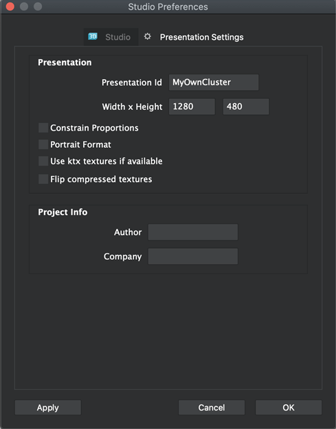
- Adjust the canvas size of your project in Qt Design Studio according to the screen size in Qt 3D Studio presentation by editing the
Constants.qmlfile in the Code view. If you cannot see the Code view, select Window > Views, and then select the Code checkbox. In the Projects view, open the imports subfolder, then the subfolder named after your project, and double-clickConstants.qml. Edit the values for readonly property int width and readonly property int height to match the Width x Height values in Qt 3D Studio presentation.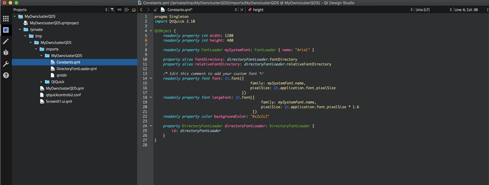
- To delete the placeholders created by the wizard, multiselect Text and view3D components (Ctrl + mouse left click) in Navigator, then right click on the selected items, and select Edit > Delete.
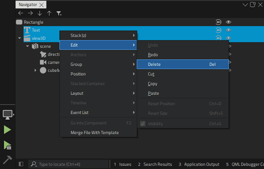
Importing Assets
- Select Assets >
 .
.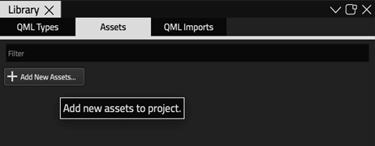
- Select the
.uiafile for the Qt 3D Studio project you wish to import, and then select Open.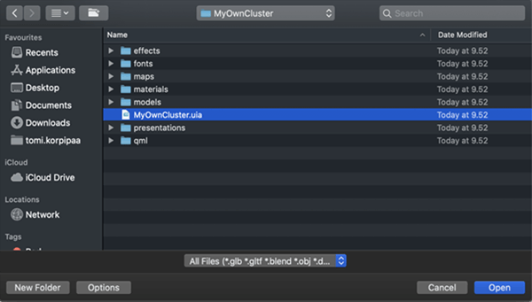
- Select Import, and after the import is complete, select Close.
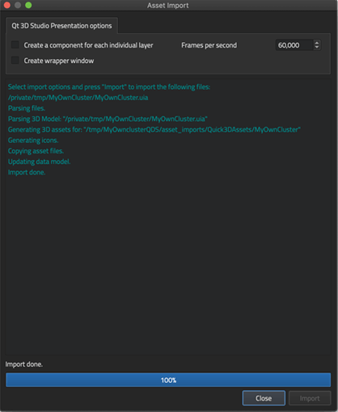
- The 2D assets imported from Qt 3D Studio now appear in > Assets.
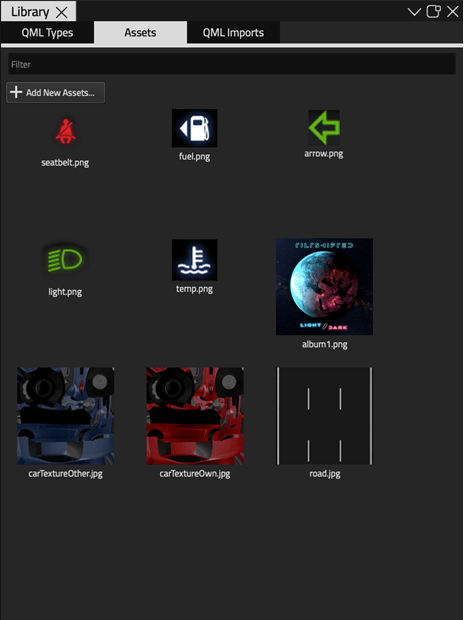
- The QML components generated from the imported Qt 3D Studio project now appear as available imports in Components under QML Types. Select Quick3DAssets.MyOwnCluster to import them to your project.
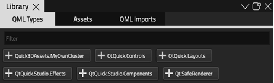
- The imported QML types now appear in Components and can be added to the project.
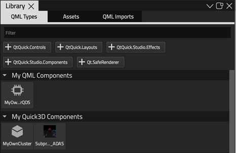
Adding Components to the Project
- Drag MyOwnCluster from My Quick3D Components in Components to the 2D view.
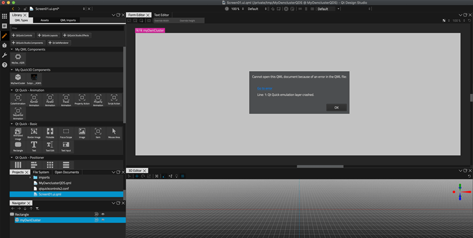
- In Navigator, right click on myOwnCluster and select Go into Component.
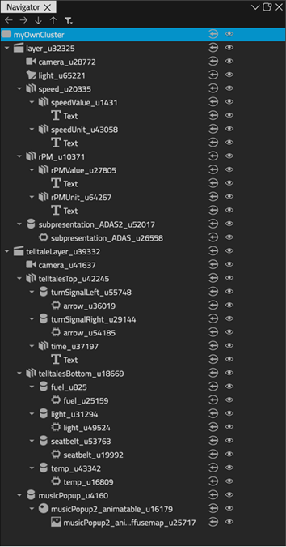
- Find the offending line in the Code view.
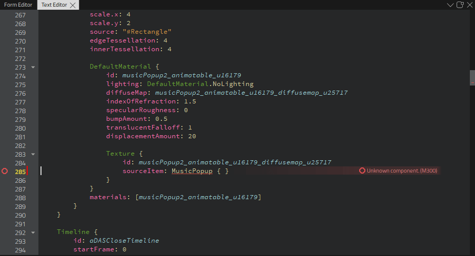
- Comment out the offending line by placing two slashes in the beginning of it (or remove the line).
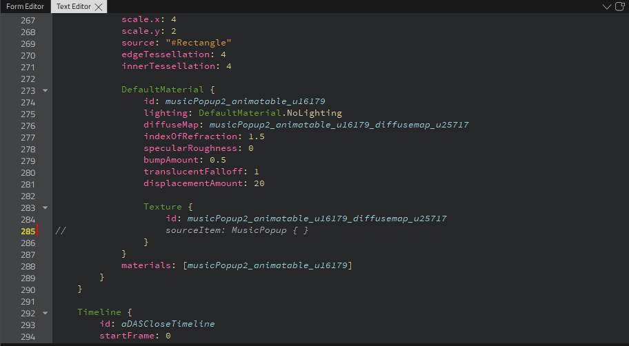
- In Navigator, go to each component of the project and comment out (or remove) any offending lines you find.
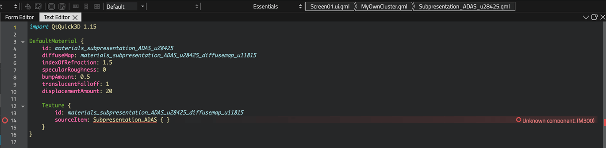
- You should now see some parts of the project in the 2D view.
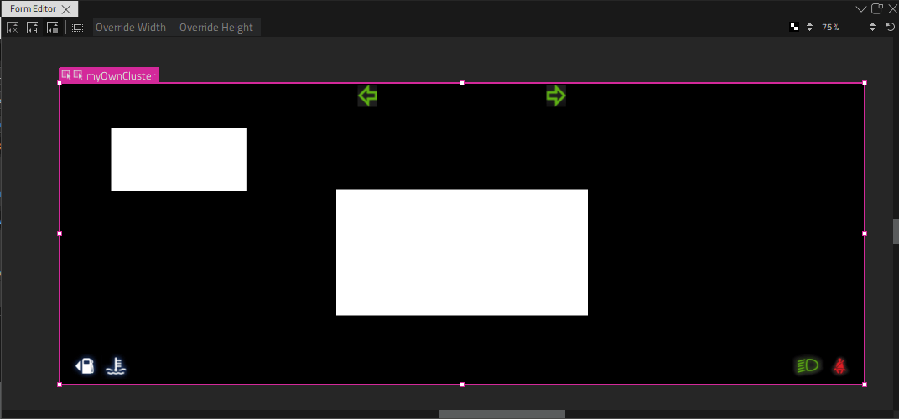
Converting 3D Elements
- Drag subpresentation_ADAS from Components > {My 3D Components} into layer folder in Navigator.
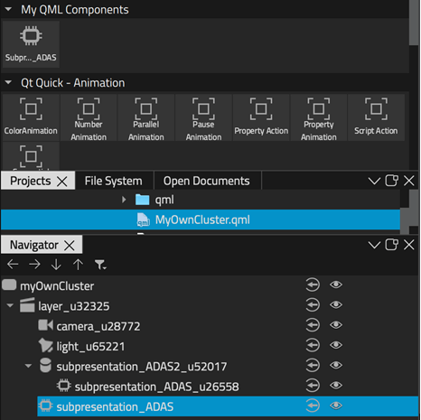
- To delete the old subpresentation rectangle, right-click on the file name (subpresentation_ADAS2_u52017 in this project), select Edit > Delete.
- Go into the component subpresentation_ADAS.
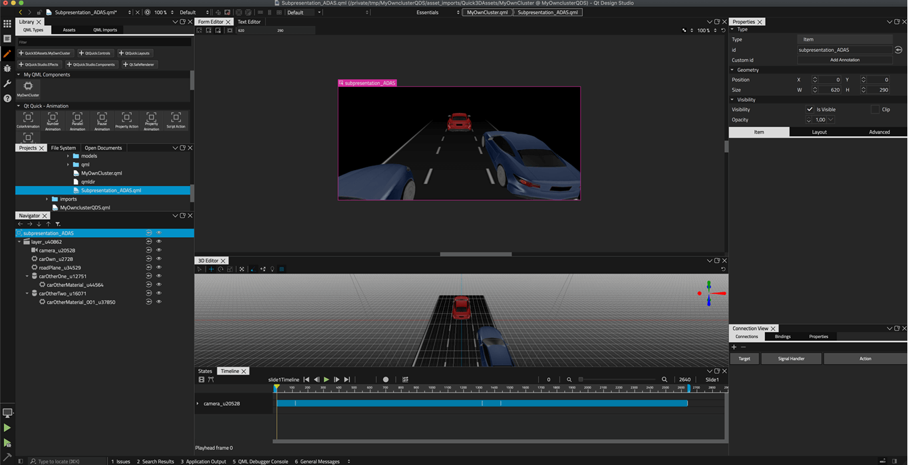
- Reposition objects and/or camera in the 3D view according to the original Qt 3D Studio project. The desired scene may be achieved simply by changing the z position sign from positive to negative, or vice versa, in some cases.
See the 3D view for more information on how to edit 3D scenes.
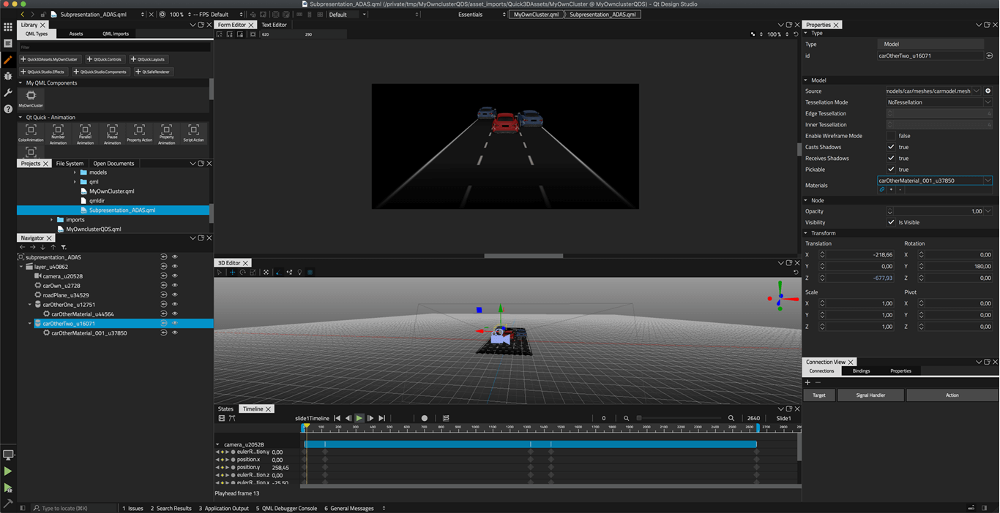
- Recreate animations in subpresentation_ADAS according to the original project. For more information on creating animations in Qt Design Studio, see Creating Timeline Animations.
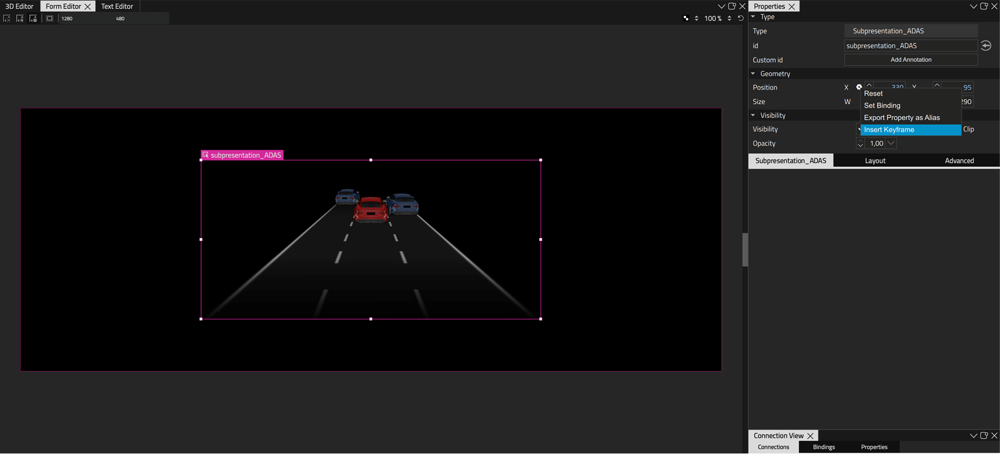
- Go to the Timeline View to review the timeline for the project.
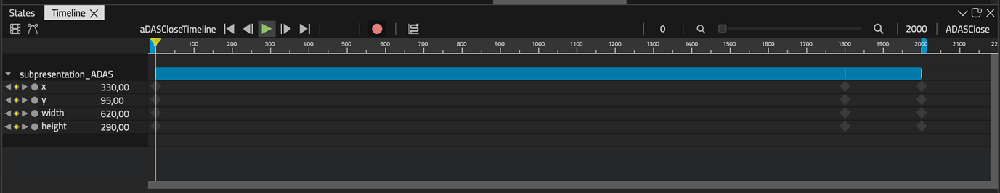
Converting 2D Elements
- Recreate the 2D elements of the original project (in all layers) using the 2D QML elements available in Qt Design Studio. You can use the imported 2D layer as a guide for recreating the elements. If the 2D elements in the original project have rotations, especially in a 3D layer, make sure to add rotations that mimic the original ones to the Qt Design Studio project. For example, rotation on one axis with perspective camera requires rotation on two axes in pure 2D. You may need to use the Code view to achieve rotation similar to the rotation of the object in Qt 3D Studio. For more information on specifying advanced transformations on Items, see Transform.
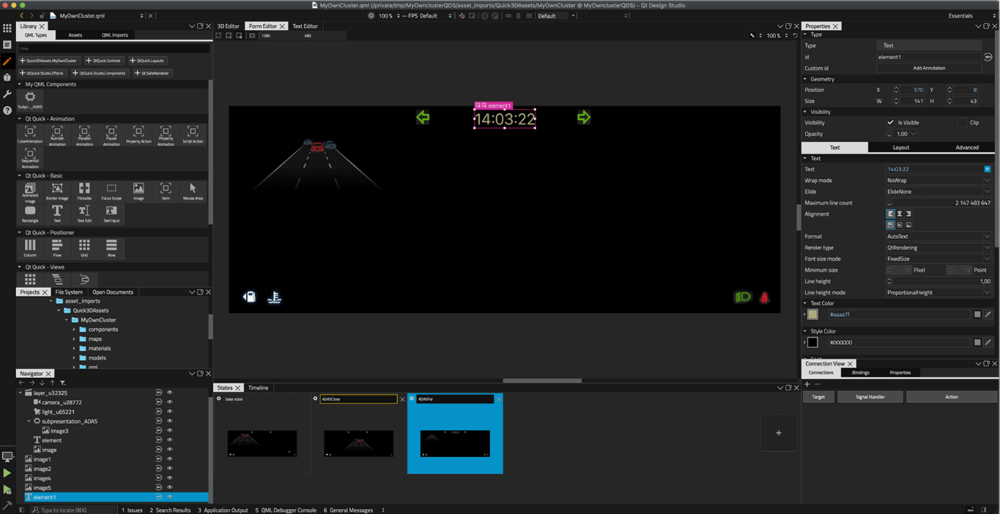
- To delete the 2D layer (telltaleLayer_u39332) in Navigator after recreating the 2D elements, right-click on the component, and select Edit > Delete.
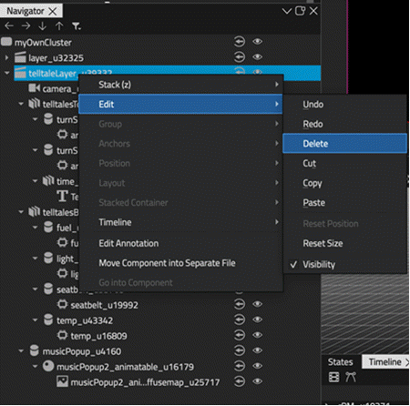
- Next, you need to delete the 2D elements from the 3D layer (speed_u20335 and rPM_u10371 from layer_32325). Right-click on the element, and select Edit > Delete.
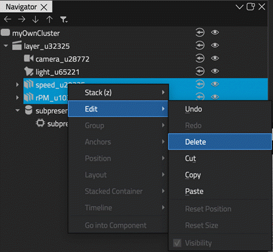
- Recreate the animations for 2D elements the same way it was done for the 3D elements.
Converting QML Streams
- Find QML stream files in file explorer.
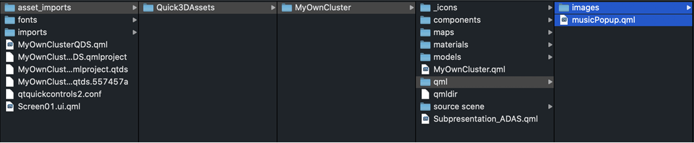
- Move the QML stream files under the import's main folder (one level up in this example).
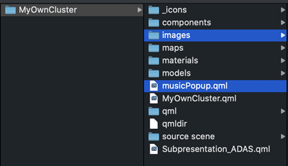
- Make sure that the QML stream file names start with a capital letter to enable Qt Design Studio to recognize them as QML component files.
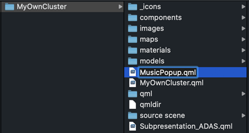
- Return to Qt Design Studio and enter the MyOwnCluster component. The QML stream component now appears in My 3D Components.
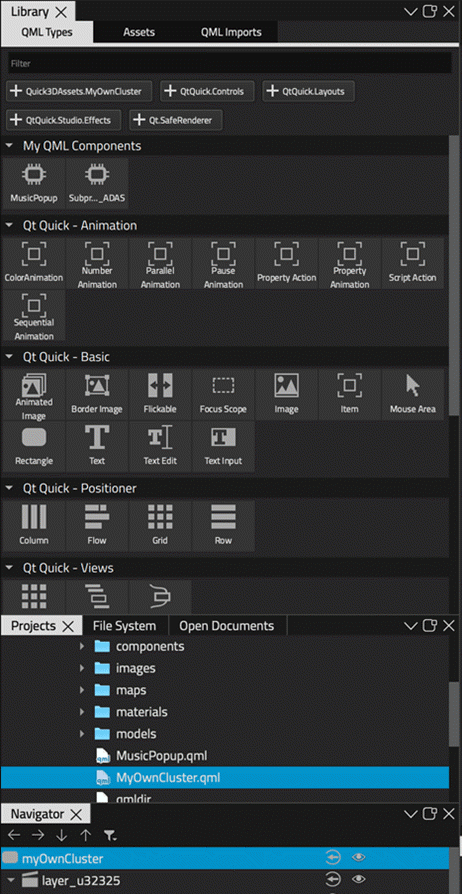
- Drag-and-drop the QML stream component to MyOwnCluster in Navigator.
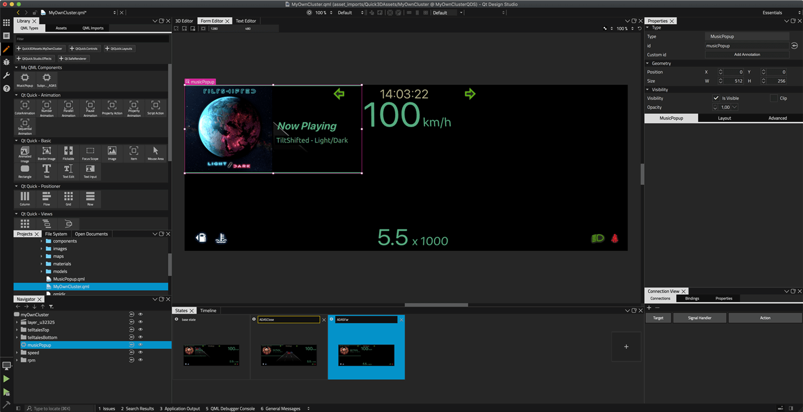
- Go to the States view and use the Visibility tab in the Properties view to make the QML stream component visible only in the correct state.
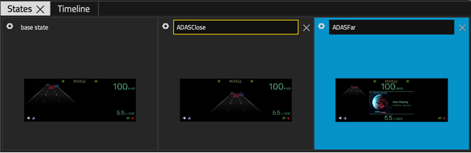
- Next, recreate the animations for the QML stream according to the original project.
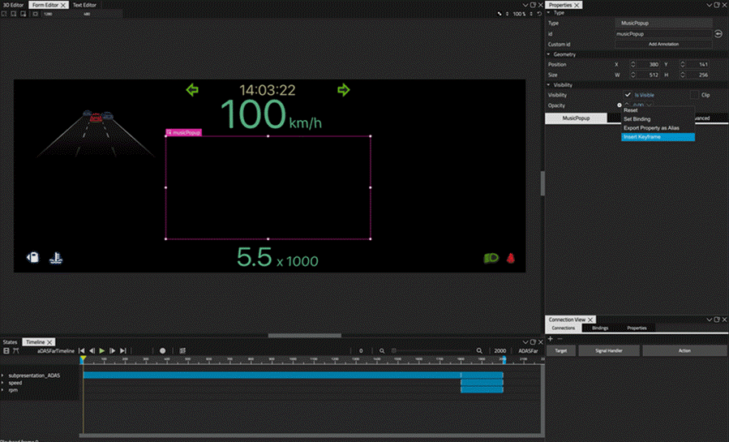
- Recreate all the keyframes for the imported QML stream that is now a component.
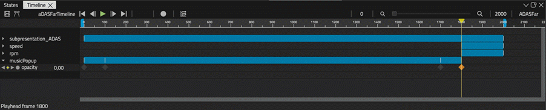
Cleaning Up the Project Structure
- Go to file explorer and clean up the project structure deleting the folder and files that are not used in the Qt Design Studio project.
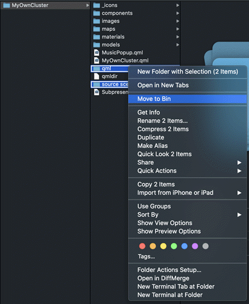
- Individual files can also be deleted in the Projects view in Qt Design Studio. To delete a file, right-click on it, select Delete File, and then select Yes.
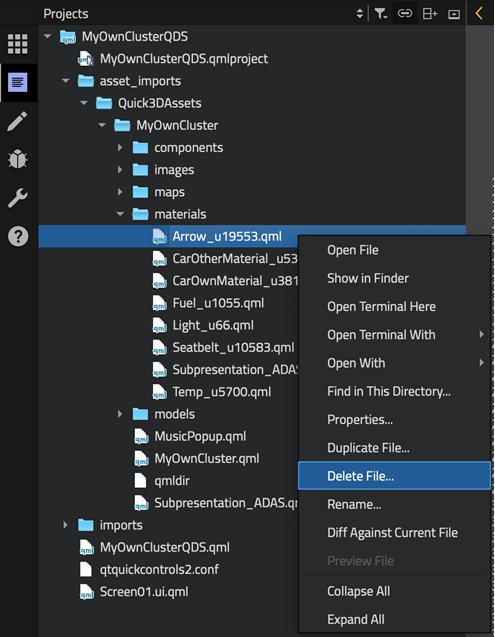
- This is the project structure after clean-up.
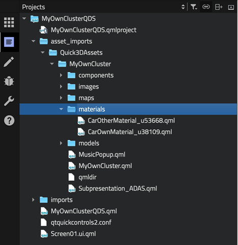
Finished
You have now converted your Qt 3D Studio project to Qt Design Studio.
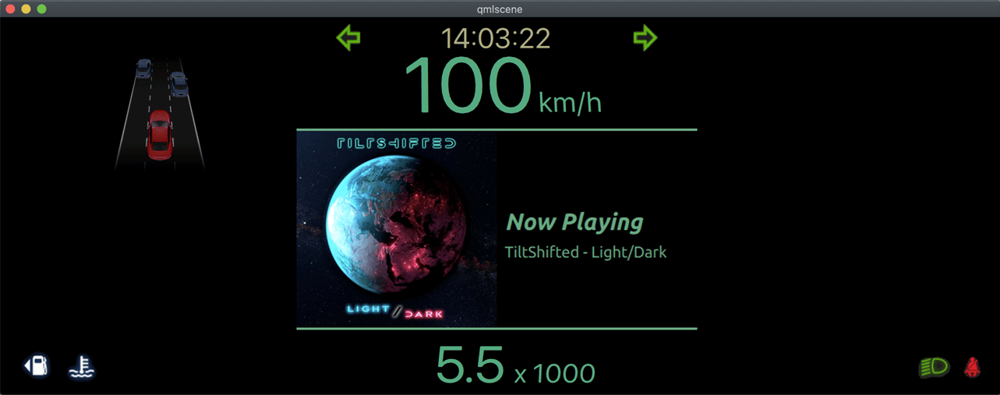